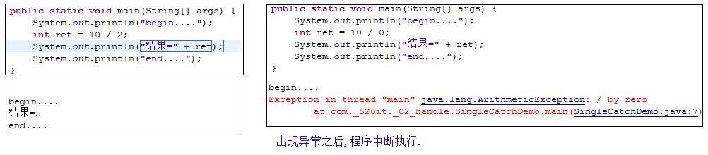

什么是异常:非正常的；不同于平常的.
生活中:医生说,你的身体某个部位有异常,该部位和正常相比有点不同,该部位的功能将受影响.
张三要开车去上班,正常情况下,应该是到达公司,上班.
不正常的情况下,车子坏了,只能走路去,导致上班迟到.
程序中:在程序中,代码出现错误,程序就会终止运行.
异常指的并不是语法错误,语法错了,编译不通过,不会产生字节码文件,根本不能运行.
----------------------------------------
异常处理是衡量一门语言是否成熟的标准之一,主流的语言Java,C++,C#等支持异常处理机制.
异常处理机制可以让程序有更好的容错性,使我们的代码更健壮.
遗憾的是传统的C语言却没有异常,此时只能程序员通常使用方法的特定返回值来表示异常情况,并且使用if语句来判断正常和非正常情况,那没有异常会带来什么问题呢?
----------------------------------------
没有异常机制存在的缺点:
1:使用方法的返回值来表示异常情况有限,无法穷举所有的异常情况.
2:异常流程代码和正常流程代码混合一起,增大了程序的复杂性,可读性也不好.
3:随着系统规模的不断扩大,程序的可维护性极低.
针对于上述的没有异常机制的缺点,我们提出解决方案:
解决方案:
1:把不同类型的异常情况描述成不同类(称之为异常类).
2:分离异常流程代码和正确流程代码.
3:灵活处理异常,如果当前方法处理不了,应该交给调用者来处理.
----------------------------------------------------------------------------------------------------
非正常情况(出现后程序会中断)(看API).
1):Error:表示错误,一般指JVM相关的不可修复的错误,如,系统崩溃,内存溢出,JVM错误等,由JVM抛出,我们不需要处理.
几乎所有的子类都是以Error作为类名的后缀.
2):Exception:表示异常,指程序中出现不正常的情况,该问题可以修复(处理异常).
几乎所有的子类都是以Exception作为类名的后缀.
----------------------------------------------------------------------------------------------------
出现异常,不要紧张,把异常的简单类名,拷贝到API中去查.
----------------------------------------------------------------------------------------------------
常见的Error:
StackOverflowError:当应用程序递归太深而发生内存溢出时，抛出该错误。
常见的Exception:
NullPointerException:空指针异常,一般指当对象为null的时候,调用了该对象的方法,字段.
ArrayIndexOutOfBoundsException:数组的索引越界,(小于0或者大于等于数组长度)
NumberFormatException:数字格式化异常, 一般指,把非0~9的字符串转换为整数.
--------------------------------------------------------------
证明出现异常之后,程序会中断,所以必须处理异常.
如果异常出现的话,会立刻终止程序,所以我们得处理异常:
1):该方法不处理,而是声明抛出,由该方法的调用者来处理(throws).
2):在方法中使用try-catch的语句块来处理异常.
-----------------------------------------------------------------------
使用try-catch捕获单个异常,语法如下:
try{
编写可能会出现异常的代码
}catch(异常类型 e){
处理异常的代码
//记录日志/打印异常信息/继续抛出异常
}
注意:try和catch都不能单独使用,必须连用.


如何获取异常信息,Throwable类的方法:
1):String getMessage():获取异常的描述信息,原因(提示给用户的时候,就提示错误原因).
2):String toString():获取异常的类型和异常描述信息(不用).
3):void printStackTrace():打印异常的跟踪栈信息并输出到控制台. 不需要使用System.out.println.
包含了异常的类型,异常的原因,还包括异常出现的位置,在开发和调试阶段,都得使用printStackTrace.
记住:现在在catch语句块中,必须写:e.printStackTrace();目的:查看异常的具体信息,方便调试和修改.

使用try-catch捕获多个异常:
try{
编写可能会出现异常的代码
}catch(异常类型A e){ 当try中出现A类型异常,就用该catch来捕获.
处理异常的代码
//记录日志/打印异常信息/继续抛出异常
}catch(异常类型B e){ 当try中出现B类型异常,就用该catch来捕获.
处理异常的代码
//记录日志/打印异常信息/继续抛出异常
}
注意:
1:一个catch语句,只能捕获一种类型的异常,如果需要捕获多种异常,就得使用多个catch语句.
2):代码在一瞬间只能出现一种类型的异常,只需要一个catch捕获,不可能同时出现多个异常.

finally语句块表示最终都会执行的代码,无论有没有异常.
---------------------------------------------------------------------------------------
什么时候的代码必须最终执行:
当我们在try语句块中打开了一些物理资源(磁盘文件/网络连接/数据库连接等),我们都得在使用完之后,最终关闭打开的资源.
---------------------------------------------------------------------------------------
finally的两种语法:
1):try...finally: 此时没有catch来捕获异常,因为此时根据应用场景,我们会抛出异常,自己不处理.
2):try...catch....finally:自身需要处理异常,最终还得关闭资源.
注意:finally不能单独使用.
---------------------------------------------------------------------------------------
当只有在try或者catch中调用退出JVM的相关方法,此时finally才不会执行,否则finally永远会执行.
System.exit(0);//退出JVM
---------------------------------------------------------------------------------------
演示实验finally和不使用finally的区别,必须使用finally才能保证最终必须执行的代码.
如果finally有return语句,永远返回finally中的结果,避免该情况.
finally面试题
异常(Exception)的分类:根据在编译时期还是运行时期去检查异常?
1):编译时期异常:checked异常.在编译时期,就会检查,如果没有处理异常,则编译失败.
2):运行时期异常:runtime异常.在运行时期,检查异常.在编译时期,运行异常不会编译器检测(不报错).
运行异常:在编译时期,可处理,可不处理.
---------------------------------------------------
如何确定某一个异常类是编译异常还是运行异常呢?

抛出异常:
throw: 运用于方法内部,用于给调用者返回一个异常对象,和return一样会结束当前方法.
throws: 运用于方法声明之上,用于表示当前方法不处理异常,而是提醒该方法的调用者来处理异常(抛出异常).
如:private static int divide(int num1, int num2) throws Exception {}
------------------------------------------------------------------------------------------------------------------
throw语句:
运用于方法内部,抛出一个具体的异常对象.
throw new 异常类("异常信息"); 终止方法.
------------------------------------------------------------
throw:
一般的,当一个方法出现不正常的情况的时候,我们不知道该方法应该返回什么,此时就返回一个错误,在catch语句块中继续向上抛出异常.
return 是返回一个值,throw 是返回一个错误,返回给该方法的调用者.
举例: 定义一个方法,用于处理两个整数相除.
------------------------------------------------------------------------------------------------------------------
查看String类的charAt方法源代码
------------------------------------------------------------------------------------------------------------------

为什么需要自定义异常类:
我们说了Java中不同的异常类,分别表示着某一种具体的异常情况,那么在开发中总是有些异常情况是SUN没有定义好的,此时我们根据自己业务的异常情况来定义异常类.
什么是自定义异常类:在开发中根据自己业务的异常情况来定义异常类.
自定义一个业务逻辑异常: LogicException.
异常类如何定义:
方式1):自定义一个受检查的异常类: 自定义类 并继承于java.lang.Exception.
方式2):自定义一个运行时期的异常类:自定义类 并继承于java.lang.RuntimeException.
处理异常的原则:
1:异常只能用于非正常情况,try-catch的存在也会影响性能.
2:需要为异常提供说明文档,比如Java doc,如果自定义了异常或某一个方法抛出了异常,我们应该记录在文档注释中..
3:尽可能避免异常.
如NullPointerException
4:异常的粒度很重要，应该为一个基本操作定义一个 try-catch 块，不要为了简便，将几百行代码放到一个 try-catch 块中.
5:不建议在循环中进行异常处理，应该在循环外对异常进行捕获处理(在循环之外使用try-catch).
6:自定义异常尽量使用RuntimeException类型的.